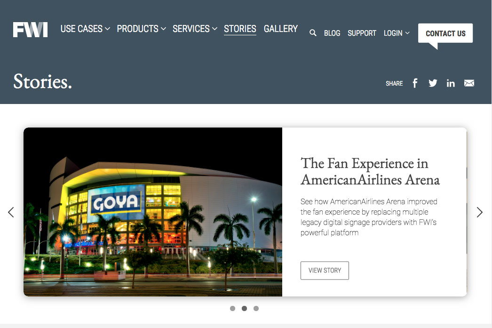

Comparison-page implementation
A structured way to understand differences, with responsive details carried through to the final page.
View comparison pageFor lean B2B marketing teams
Featured engagement / B2B software
Baz Web design & development
Supporting a marketing website across product storytelling, comparison pages, and lead capture. Thoughtful execution across the details, with room to keep improving.
Inside the workMy contributions span implementation and interaction studies. These are selected deliverables, without unverified performance claims.
A structured way to understand differences, with responsive details carried through to the final page.
View comparison pageForm, confirmation, and gated-content behavior for the research report and calculator.
View calculatorExploratory animation studies that make the connection between code review, feedback, and learning visible.
Visit Baz 02
02Recurly / UI development
Detailed interfaces, animated charts, graphs, and maps, with creative solutions for mobile layouts.
Explore the motion study
03Four Winds Interactive / Development
Working closely with designers to bring an enterprise software company’s broad product suite to the web.
Inspect the archiveWhat moves up the page?
What earns the reader’s attention?
Here’s one way to think it through.
After: a clear outcome, connected explanation, and one primary action.
Client work, revisited
Two earlier client projects, reimagined as interactive experiences. Explore the original work—and what I’d make with it today.

Subscription journeys and data that invite a closer look.
Explore the motion study
A technical product story you can follow, step by step.
Explore the motion studyBased on archived websites I worked on. These are new portfolio interpretations, with original references inside.
Your marketing team knows where it wants to go. I help turn the website part into something concrete.
A product page, campaign, comparison page, or important site improvement. A defined priority, designed and built.
Make the next thing happenReserved support for the site you already have: iteration, launches, responsive fixes, search foundations, and lead capture.
Keep the whole site movingA practical review of your website and backlog, with prioritized recommendations and a sensible first project.
Find the useful next stepA straightforward rhythm
Understand. Agree on the problem. → Make. Review real work. → Refine. Ship and keep learning.

Hello, I’m Nathan.
I’m a web designer and developer who cares about both sides: how a website feels, and how well it works once people actually use it.
My work ranges from B2B product stories and interactive research to expressive creative websites. I bring that range to a simple job: helping your team make useful things, and finish them well.
Notes on the workA launch on the horizon? A backlog that needs an owner?
Tell me where you are, and where you’d like to go.